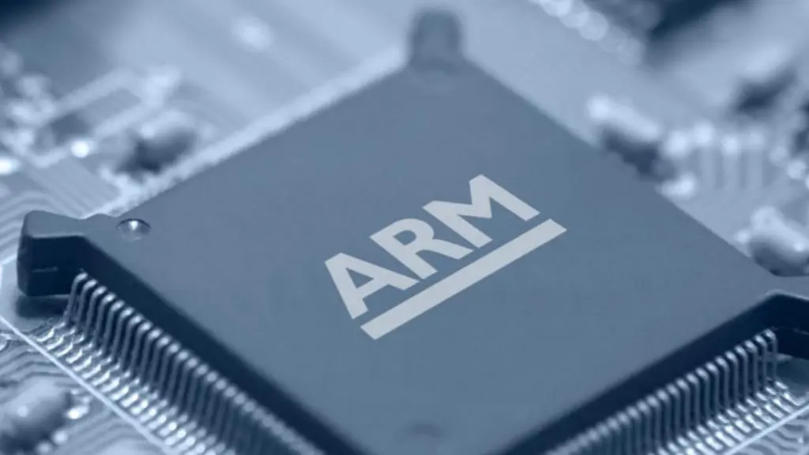
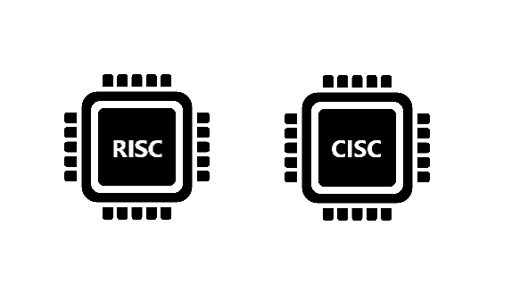
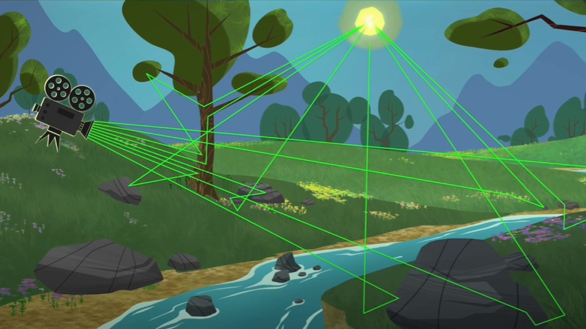
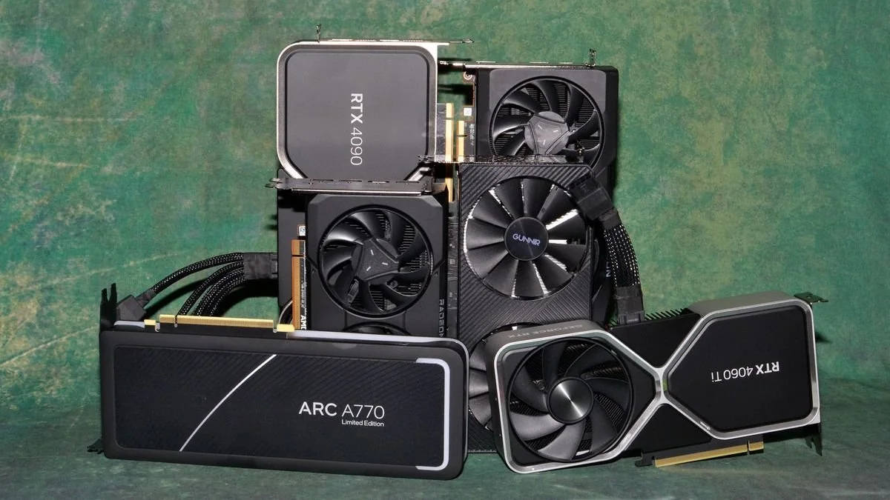
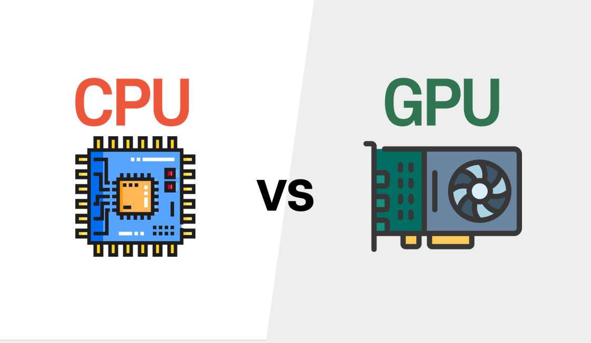

Bienvenido al repositorio de Organización de Computadores de Santiago Sánchez Ribero. Aquí puedes encontrar secciones con temas específicos vistos en el semestre.
Haz clic en una sección para ver su descripción y acceder al documento relacionado.
Memoria Principal
La memoria principal, también conocida como memoria RAM (Random Access Memory), es un componente fundamental en los sistemas informáticos, encargado de almacenar temporalmente los datos y programas que el procesador necesita ejecutar en tiempo real. A diferencia del almacenamiento permanente, como los discos duros o las unidades SSD, la memoria principal es volátil, lo que significa que su contenido se borra al apagar el dispositivo. Esta memoria permite el acceso rápido a la información, facilitando una mayor velocidad de procesamiento y optimizando el rendimiento general del sistema. Gracias a la memoria principal, el sistema operativo y las aplicaciones pueden funcionar de manera ágil, gestionando eficientemente el acceso a los datos mientras están en uso.
Memoria Secundaria
Las memorias secundarias son dispositivos de almacenamiento de datos no volátiles que permiten guardar información de manera permanente o a largo plazo. A diferencia de la memoria principal, que es volátil y se borra al apagar el sistema, las memorias secundarias conservan los datos incluso cuando el dispositivo está apagado. Estos dispositivos incluyen discos duros (HDD), unidades de estado sólido (SSD), discos ópticos (CD, DVD), y unidades flash (USB). Las memorias secundarias tienen una mayor capacidad de almacenamiento en comparación con la memoria RAM y suelen ser más lentas en términos de acceso a los datos, aunque las SSD han mejorado considerablemente este aspecto. Su función principal es almacenar el sistema operativo, programas, archivos de usuario y otros datos que no necesitan acceso inmediato, pero que deben estar disponibles de forma permanente.
Los dispositivos de entrada/salida (E/S) son componentes fundamentales en los sistemas informáticos, encargados de permitir la comunicación entre la computadora y el mundo exterior. Los dispositivos de entrada son aquellos que permiten al usuario o al sistema enviar datos al ordenador, como el teclado, el ratón, el escáner, o el micrófono. Por otro lado, los dispositivos de salida son los que permiten que la computadora envíe información procesada al usuario, como el monitor, la impresora, o los altavoces. Además, existen dispositivos de E/S combinados, que realizan tanto funciones de entrada como de salida, como las pantallas táctiles. Estos dispositivos son esenciales para la interacción con los sistemas informáticos y son clave para la operatividad de diversas aplicaciones y procesos en el día a día.
En el desarrllo de esta actividad se buscó identificar los dispositivos de E/S de cada uno de nuestros equipos:
Dispositivos RISC de última tecnología

Los dispositivos RISC (Reduced Instruction Set Computing) de última tecnología están basados en una arquitectura de procesadores que se caracteriza por un conjunto reducido y simplificado de instrucciones. Esta arquitectura permite un procesamiento más eficiente al enfocarse en operaciones simples y rápidas, lo que mejora el rendimiento general del dispositivo. En los últimos años, los avances en la tecnología RISC han impulsado el desarrollo de procesadores más poderosos y energéticamente eficientes, ampliamente utilizados en dispositivos móviles, servidores, y computadoras de alto rendimiento.
Algunos de los ejemplos más destacados en la actualidad son los procesadores ARM, que dominan el mercado de dispositivos móviles y sistemas embebidos debido a su bajo consumo de energía y alto rendimiento. ARM ha logrado optimizar aún más su diseño con tecnologías como el uso de núcleos multi-core, aceleración de inteligencia artificial, y arquitectura de 64 bits. Además, el diseño RISC se ha adaptado a aplicaciones más avanzadas, incluyendo chips para centros de datos y servidores, como los basados en la arquitectura Neoverse de ARM, que están diseñados para manejar grandes volúmenes de datos a alta velocidad. La continua evolución de los dispositivos RISC promete una mayor integración de capacidades de procesamiento, con un enfoque en la eficiencia energética y el rendimiento.
Comparación Generaciones RISC y CISC

RISC (Reduced Instruction Set Computing) y CISC (Complex Instruction Set Computing) son dos enfoques distintos en el diseño de procesadores:
RISC utiliza un conjunto de instrucciones simplificado, lo que permite ejecutar cada instrucción en un solo ciclo de reloj. Esto mejora la eficiencia y reduce el consumo de energía, siendo ideal para dispositivos móviles y sistemas embebidos.
CISC tiene un conjunto de instrucciones más complejo, permitiendo que una sola instrucción realice múltiples operaciones. Aunque puede ser más lento por instrucción, reduce el número total de instrucciones necesarias, siendo común en computadoras personales y servidores debido a su compatibilidad con software antiguo.
RISC es eficiente y rápido, ideal para dispositivos móviles, mientras que CISC es más complejo pero adecuado para aplicaciones que requieren compatibilidad y poder de procesamiento más tradicional.
GPU - Procesamiento de video 4K óptimo y con la mitad de presupuesto
El procesamiento de video 4K requiere una considerable potencia de procesamiento gráfico, y una GPU adecuada puede marcar la diferencia entre un rendimiento fluido y una experiencia deficiente. Sin embargo, obtener un rendimiento óptimo sin un gran presupuesto es posible si se seleccionan las opciones correctas.
Memoria VRAM: Para video 4K, es ideal tener al menos 4 GB de VRAM. Esto asegura que la GPU pueda manejar texturas de alta resolución y flujos de datos intensivos sin interrupciones.
Arquitectura: GPUs con arquitecturas modernas, como las de NVIDIA (Ampere, Turing) o AMD (RDNA 2), son más eficientes en el procesamiento de video gracias a su capacidad de aceleración de hardware y optimización de flujos de trabajo multimedia.
Soporte de decodificación y codificación 4K: Se debe GPUs que soporten hardware dedicado para decodificación y codificación de video 4K, como NVENC (NVIDIA) o VCN (AMD), lo cual reduce la carga en la CPU y mejora el rendimiento.
A continuación se puede observar la elección de una GPU teniendo en cuenta todo lo mencionado:
GPU - Características decisorias para selección de GPU's
Seleccionar una GPU, especialmente para tareas exigentes como edición de video, gaming, o renderizado, hay varias características clave que ayudan a tomar una decisión adecuada:
Memoria VRAM: La cantidad de memoria de video (VRAM) es crucial. Para tareas intensivas como juegos en alta resolución o edición de video 4K, se recomienda un mínimo de 4 GB, idealmente de 6 a 8 GB o más. Más VRAM permite manejar texturas de alta resolución y proyectos complejos sin problemas.
Arquitectura y Generación: Las generaciones más recientes de GPUs (como Ampere de NVIDIA o RDNA 2 de AMD) son más eficientes y cuentan con mejoras en rendimiento y consumo energético. Además, nuevas arquitecturas incluyen soporte para tecnologías avanzadas como ray tracing y machine learning.
Frecuencia y nucleos CUDA o Stream Processors: La frecuencia y el número de núcleos de procesamiento (CUDA en NVIDIA, Stream Processors en AMD) afectan directamente la capacidad de procesamiento. Un mayor número de núcleos y frecuencias más altas suelen traducirse en un rendimiento superior, especialmente para renderizado o cálculos intensivos.
Tecnologías especiales: Características como ray tracing (para iluminación y gráficos realistas) y DLSS (Deep Learning Super Sampling, que mejora el rendimiento en juegos) en NVIDIA, o FidelityFX en AMD, son ventajas significativas para usuarios que buscan calidad visual y eficiencia. Aceleración de Hardware para video: La aceleración de hardware dedicada, como NVENC en NVIDIA o VCN en AMD, es esencial para edición y streaming de video, ya que mejora la codificación y decodificación de video sin sobrecargar la CPU. Eficiencia energética y temperatura: GPUs más eficientes consumen menos energía y generan menos calor, lo cual es importante para sistemas compactos o de bajo consumo. Esto también impacta el diseño de enfriamiento necesario y la estabilidad del sistema a largo plazo.
A continuación se puede observar una comparativa entre dos GPU's:
GPU - Impacto de las nuevas tecnologías

Seleccionar una GPU, especialmente para tareas exigentes como edición de video, gaming, o renderizado, hay varias características clave que ayudan a tomar una decisión adecuada:
Ray Tracing: El ray tracing simula el comportamiento de la luz de manera más realista, produciendo reflejos, sombras y efectos visuales más detallados. Inicialmente, esta tecnología era muy demandante, pero con GPUs modernas (como las de la serie RTX de NVIDIA), el ray tracing es más accesible y permite gráficos más realistas en juegos y aplicaciones de simulación.
DLSS: DLSS es una tecnología de NVIDIA que utiliza inteligencia artificial para mejorar la calidad visual sin sacrificar el rendimiento. Al renderizar a una resolución más baja y luego usar algoritmos de aprendizaje automático para mejorar la imagen, DLSS ofrece gráficos de alta calidad mientras mantiene una tasa de fotogramas alta, lo que es especialmente útil en juegos de alta resolución y aplicaciones de VR.
Arquitecturas de rendimiento mejorado: Las nuevas arquitecturas de GPU (como Ampere de NVIDIA o RDNA 2 de AMD) mejoran el rendimiento al optimizar el uso de núcleos, incrementar la eficiencia energética y reducir el consumo. Esto permite un mayor rendimiento en tareas complejas como el renderizado, la inteligencia artificial y el aprendizaje automático, lo que abre nuevas posibilidades en áreas como la edición de video 4K, la ciencia de datos y la simulación.
Aceleración de hardware para video e IA: La aceleración por hardware para decodificación y codificación de video (como NVENC de NVIDIA y VCN de AMD) ha permitido una mayor eficiencia en el procesamiento de medios, especialmente en tareas como la edición de video 4K y la transmisión en vivo. Además, el procesamiento de tareas de inteligencia artificial (como el entrenamiento de modelos de machine learning) se ha visto beneficiado por la capacidad de las GPUs para manejar grandes volúmenes de datos de manera paralela. Mejoras en la eficiencia energética: Las nuevas generaciones de GPUs se centran cada vez más en la eficiencia energética, lo que resulta en un menor consumo de energía y una menor generación de calor. Esto es especialmente importante en dispositivos móviles, estaciones de trabajo compactas y servidores de alto rendimiento donde la gestión de energía y la temperatura son críticas. Integración con VR y AR: Las GPUs actuales están optimizadas para soportar realidad virtual (VR) y realidad aumentada (AR), mejorando la experiencia inmersiva con gráficos fluidos y sin retrasos. Esto se logra mediante mejoras en la latencia, el rendimiento en 3D y el soporte para pantallas de alta resolución.
GPU - Preguta Evaluación 1

Las tarjetas gráficas antiguas (como la serie GTX de NVIDIA o RX 500 de AMD) tenían menor rendimiento, soporte limitado para tecnologías modernas y menos VRAM, lo que las hacía adecuadas solo para tareas básicas o juegos en resoluciones más bajas. Además, consumían más energía y generaban más calor.
Las tarjetas gráficas nuevas (como las NVIDIA RTX y AMD RX 6000) ofrecen un rendimiento superior con soporte para ray tracing, DLSS, y FidelityFX, mejorando la calidad visual y la eficiencia. Tienen más VRAM, son más eficientes energéticamente y son compatibles con tecnologías modernas como PCIe 4.0 y HDMI 2.1, lo que las hace ideales para tareas avanzadas como edición de video 4K, juegos en alta resolución y procesamiento de AI. Sin embargo, son más caras.
GPU - Preguta Evaluación 2

Las CPU y GPU pueden manejar el paralelismo, pero lo hacen de manera diferente debido a sus arquitecturas especializadas. La CPU está optimizada para ejecutar instrucciones de forma secuencial, siendo ideal para tareas complejas y que requieren alta precisión. En cambio, las GPU están diseñadas para realizar múltiples operaciones en paralelo, lo que las hace más eficientes en el procesamiento gráfico, como renderizar imágenes y videos simultáneamente.
GPU - Preguta Evaluación 3
Descripción de la sección 4. Esta sección cubre el tema GHI...
GPU - Unidades Flip Flop
Descripción de la sección 4. Esta sección cubre el tema GHI...
Operaciones Básicas
Descripción de la sección 4. Esta sección cubre el tema GHI...